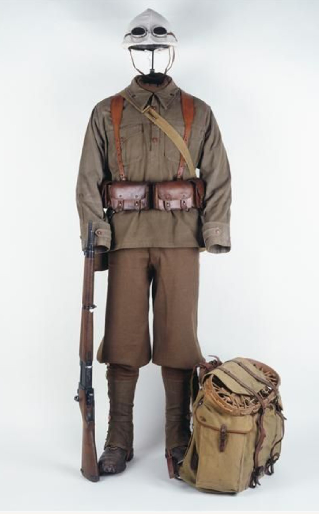

Les Chasseurs Portés sont des troupes motorisées d’élite intégrées aux Divisions Légères Mécaniques (DLM). Leur rôle est d’accompagner les unités blindées, de tenir les positions capturées par les chars et d’assurer la protection des flancs lors des opérations rapides.
Ils constituent l’infanterie de la cavalerie moderne française de 1939–1940.
L’armement est similaire à celui de l’infanterie motorisée, mais les Chasseurs Portés disposent souvent d’un appui blindé à proximité, ce qui renforce leur puissance de feu.
Les Chasseurs Portés se déplacent en camions, motos ou véhicules semi‑chenillés. Leur mission est d’appuyer les chars SOMUA S35 et Hotchkiss H39, de sécuriser les zones conquises et d’intervenir rapidement sur les points sensibles du front.
Leur mobilité et leur coordination avec les blindés en font une unité essentielle dans les opérations de cavalerie mécanisée.